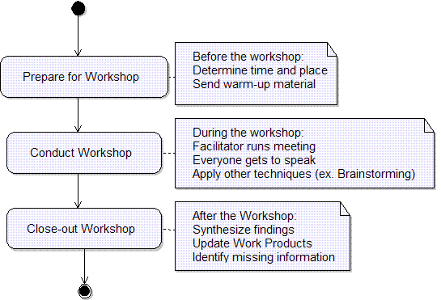

| Guideline: Requirements Gathering Techniques |
 |
|
| Related Elements |
|---|
Sources of requirementsGood requirements start with good sources. Finding those high-quality sources is an important task and, fortunately, one that takes few resources. The primary sources of requirements are the Stakeholders, so begin by identifying them from among these candidates:
Ask each stakeholder to identify other stakeholders. By “peeling the onion” in this manner you can quickly identify all stakeholders so that you don't miss important perspectives and associated requirements. This will help you identify and resolve conflicting requirements as early as possible. These are other possible sources of ideas for requirements:
The last item often includes information about the current system that competitors are using to solve the business problem. Requirements-gathering techniquesAfter you have identified these sources, there are several techniques that you can use to gather requirements (also see [TEL06]). However, it is important to recognize that requirement gathering is an iterative process, and there is no single technique that is universally applicable [HIC03].
Success tips: Capture requirements, and then collaborate with the stakeholders to correct and improve them. You can capture requirements in one or more of these ways:
Conduct a brainstorming sessionBrainstorming is a short group session where all participants are allowed to say whatever they feel is important to the topic of discussion. After that, a facilitator leads the group in organizing and prioritizing the results. The following basic rules for brainstorming ensures better results:
Interview usersFace-to-face contact with users through individual interviews is the primary source of requirements and an important way to gather and validate their requirements. Remember that it is not the only possible technique and that you can conduct interviews many different ways. Develop a repertoire of styles to fit different situations. Unless you use the system yourself, you will need to make an effort to understand and experience the user's problem to describe it clearly and correctly. Start with unstructured interviews to gain an understanding of the work environment. Ask stakeholders about their jobs and the problems that they face. Structured interviews, using a prepared set of questions, can be used later to fill in the gaps of your knowledge. Work in the target environmentExperience the work of the users for yourself. Working with users helps you understand problems that have resisted previous solutions. Familiar systems that were developed in this way inevitably include tools for programmers, such as interactive editors and compilers, because the developers naturally have both the expertise in the subject area and the desire to solve their own problems. It would be good to see the same dedication devoted to solving problems in other areas too. Where the work cannot easily be experienced in this way, it may still be possible to do a bit more than just sit quietly and observe. Users can give you a commentary on what they are doing, what the problems are, and what they would like to have to make the work easier. Study analogous systemsThe starting point for many projects is often a similar or an existing system. Sometimes, comparable products and systems contain working versions of good ideas for solving user problems. You can save the time and avoid reinventing the wheel by looking at systems already on the market, whether they are systems installed at the user's site or products made by rival organizations. Even if they are trying to solve slightly different problems, they often provide valuable clues about what you need to do. Examine suggestions and problem reportsRequirements can come from change suggestions and user problems. A direct road way to find requirements is to look at suggestions and problems as they were first described. Most organizations have a form for reporting system problems or software defects. You can ask to look through those reports (there will probably be many). Sort them into groups so that you can identify the key areas that are troubling users. Ask users questions about these areas to clarify the users' actual needs. If there is an existing Work Items List from a previous release, or even from a similar project, review the list for potential requirements that may apply to the current development project. If you're lucky, you may be able to re-use some of that code as well! Talk to support teamsMost large sales organizations have a help desk that keeps a log of problems and fixes, and support engineers who do the fixing. Many organizations have similar facilities to support their own operations. Talking to the help desk staff and the support engineers may give you good leads into the requirements, and save you time. Also talk to the training team and installation teams about what users find to be difficult. Study improvements made by usersThis is an excellent source of requirements. Users of a standard company spreadsheet may have added a few fields, or combined different sheets, or drawn a graph that exactly meets their individual needs. You just need to ask: Why did you add that? Their answers help you get to the heart of the actual requirement. Look for unintended usesPeople often use things for purposes other than what the designers intended. This is a good way to get new ideas and to think of innovations. For example, an observant product manager noticed that an engineer was staying in the office late to use an advanced computer-aided design system to design a new kitchen layout for his home. Inexpensive commercial products are now widely available for home use. Conduct collaborative workshopsCollaborative workshops can help you pull together a good set of requirements quickly. In two to five days, you can create a set of requirements, and then review and improve them. If everyone in a workshop tries to estimate the cost and value of each requirement, the outcome is much more useful and cost-effective. Collaborative workshops are quicker and better at discovering requirements than other techniques, such as one-on-one interviews. You are bringing the right collection of people together and getting them to correct, improve, and reach consensus on their requirements. A workshop is inherently expensive because of the number of people involved, but it saves a significant amount of time. If you can define the product right the first time and cut three months off the requirements gathering, the savings could be enormous. The workshop has to be thoroughly organized to take advantage of people's time. Choose a quiet location for the workshop so that people are not disturbed by day-to-day business. Discourage mobile phones, but arrange to take messages. Take advantage of informal interactions by choosing a site so that people aren't likely to go home at night or to go out separately. The example in the following figure shows the logic of a requirements workshop. Notice that the workshop provides the environment in which to apply other requirements-gathering techniques, such as brainstorming. Conducting workshops Demonstrate prototypes to stakeholdersPrototypes and models are an excellent way of presenting ideas to users, because they allow people to immediately see some aspects of the system. Showing users a simple prototype can provoke them into giving good requirements information or changing their minds about existing requirements. Prototypes can illustrate how an approach might work or give users a glimpse of what they might be able to do. More requirements are likely to emerge when users see what you are suggesting. A presentation can use a sequence of slides, a story board, an artist's impression, or even an animation to give users a vision of the possibilities. When prototyping software, make a mock-up of the user interface screens, emphasizing that there is no code and that the system has not been designed or even specified yet. Fair warning: A mock-up can set expectations that may be difficult to meet. This prototyping aims to get users to mention what may turn out to be missing requirements. You are not trying to sell users an idea or product. Instead, you are finding out what they actually want. Seeing a prototype, which invariably is wrong in some ways and right in others, is a powerful stimulus to users to start saying what they want. They may point out plenty of problems with the prototype. This is excellent, because each problem leads to a new requirement. |
This program and the accompanying materials are made available under the |